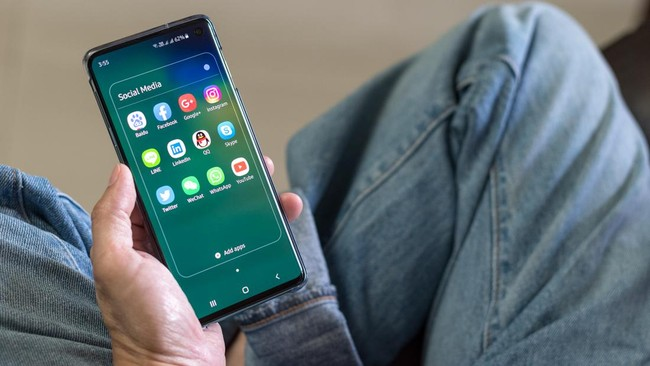

Apa yang Harus Dilakukan jika Memori Hp Penuh?
Purwakarta, AboutNEWS -- Memori Hp penuh menjadi salah satu faktor yang bisa mengganggu, sehingga pengguna perlu memberi ruang kosong yang cukup demi performa yang optimal. Saat ini ponsel-ponsel yang beredar di pasaran rata-rata dibekali memori paling kecil 128GB. Sejumlah pengguna bahkan cenderung memilih ponsel dengan memori yang lebih besar, misalnya varian 256GB dan 512GB. TIPS TEKNOLOGI Cara Hemat Baterai Hp Selama Perjalanan Jauh Libur Nataru
Namun demikian, memori besar yang diberikan ponsel saat ini juga seimbang dengan perkembangan kualitas kameranya. Kualitas kamera yang lebih baik menghasilkan file gambar dan video yang lebih besar, sehingga memakan lebih banyak tempat di memori. Selain gambar dan video, beberapa aplikasi juga memiliki ukuran yang sangat besar dan banyak menyedot ruang di ponsel. Hal ini membuat pengguna perlu pintar-pintar dalam melakukan manajemen memori agar performa ponsel bisa tetap optimal. Berikut cara mengatasi memori penuh di Hp Android. 1. Hapus aplikasi atau game Game dan aplikasi mengonsumsi memori yang tidak sedikit, terlebih game yang cukup berat. Saat ini banyak aktivitas berpindah ke ruang digital dan mengharuskan kita untuk mengunduh sejumlah aplikasi. Namun, tak jarang banyak aplikasi yang digunakan sesekali saja atau bahkan hanya satu kali. Maka dari itu, kita harus sering mengecek apakah aplikasi yang kita install masih digunakan atau tidak. Jika tidak, kita lebih baik menghapus aplikasi tersebut. Begitu pula dengan game. Game yang sudah tamat atau selesai kita mainkan bisa dihapus agar tidak memenuhi memori. 2. Hapus cache Aplikasi menyimpan data cache untuk meringankan perangkat ketika membuka kembali halaman-halaman tertentu di aplikasi. Semakin sering aplikasi digunakan, maka data cache akan semakin besar. Menghapus cache dapat membantu memberi ruang pada memori ponsel, tetapi tidak mengganggu aplikasi yang kita miliki. 3. Hapus data media WhatsApp WhatsApp menjadi salah satu platform utama untuk berkomunikasi di Indonesia. Tak hanya teks, pengguna juga kerap berkirim dokumen, foto, hingga video lewat aplikasi pesan instan ini. Seiring berjalannya waktu, data-data tersebut akan menumpuk dan memenuhi memori ponsel. Beberapa data bisa dihapus jika sudah tidak digunakan lagi. Jika data masih digunakan, Anda bisa memilih untuk melakukan backup ke penyimpanan eksternal atau cloud. 4. Matikan unduhan otomatis WhatsApp
WhatsApp menyimpan foto dan video yang dikirim pengguna lain secara otomatis. Namun, pengguna bisa mematikan fitur ini sehingga file-file tersebut tidak memenuhi memori. Berikut langkah-langkahnya: 1. Buka aplikasi WhatsApp. 2. Pilih ikon tiga titik yang terdapat di bagian atas. 3. Kemudian pilih Setelan dan 'Penyimpanan dan data'. 4. Pada fitur 'Saat menggunakan data seluler', hilangkan centang pada foto audio, video, dan dokumen. 5. Lakukan hal yang sama pada fitur 'Saat terhubung ke Wi-Fi'. 5. Gunakan aplikasi pembersih
Selain menghapus cache secara manual, Anda juga dapat menghapus data semacam ini secara otomatis dengan aplikasi cleaner atau pembersih. Beberapa aplikasi cleaner juga berfungsi untuk banyak hal seperti membersihkan RAM Hp agar dapat digunakan untuk multitasking. Salah satu aplikasi yang dapat digunakan adalah CCleaner for Android. 6. Hapus atau backup Data-data yang disimpan di ponsel, termasuk foto dan video, akan menumpuk seiring dengan penggunaan dan memenuhi memori. Agar tak memenuhi memori, data-data tersebut bisa dihapus jika sudah tak diperlukan atau dipindahkan ke penyimpanan lain seperti penyimpanan cloud, memori eksternal, PC, atau laptop. 7. Gunakan kartu memori eksternal Penggunaan kartu memori eksternal bisa menjadi salah satu solusi untuk memberi ruang lebih di ponsel. Dengan adanya memori eksternal, memori internal di ponsel bisa fokus pada penyediaan ruang untuk aplikasi. Sementara itu, data-data yang tidak berkaitan dengan aplikasi bisa disimpan di memori eksternal. 8. Gunakan penyimpanan cloud Seperti halnya memori eksternal, penggunaan penyimpanan cloud bisa menjadi solusi untuk masalah memori di ponsel. Penyimpanan cloud yang saat ini tersedia juga cukup beragam, mulai dari iCloud untuk iPhone, Google Drive untuk perangkat Android, hingga OneDrive dari Microsoft. Penyimpanan cloud sendiri bisa digunakan secara gratis, tetapi dengan kapasitas memori yang terbatas. Untuk kapasitas yang lebih besar, Anda bisa melakukan langganan berbayar. Baca artikel AboutNEWS "Apa yang Harus Dilakukan jika Memori Hp Penuh?